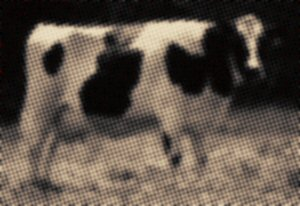

Saturday, November the 7th, 2009
back to: title, date or indexes
As the world collapses around our ears, there are a few glimmers of brightness to keep us in good cheer. I, for one, have been heartened by the inexorable rise of the sepia-tinged, snail's pace computer game, and am in a mildly non-comatose state following the announcement that Collective Farm Administrator 2.0 is about to hit the shelves in time for Christmas.
Available for X-Crate, PlayBusStop, and WeeWee, this mind-numbing game allows players to wallow in the sheer unadulterated tedium of administrating a collective farm in some godforsaken rustic hellhole fifty years ago. Sitting at your desk in a corner of a virtual barn, you have to make bureaucratic decisions about cows, goats, tractors and similar farmyard appurtenances, fill in lots of paperwork, and drink weak and watery pixellated tea from a grubby pixellated samovar while you await the arrival of the regional collective farm supervisor, who could appear on the screen at any moment, but may just as likely never arrive at all.
To give a flavour of the game, here are a couple of screenshots.

For added verisimilitude, scenes such as these remain “stuck” on screen for days on end. Sound effects include the mooing of a tubercular cow and the puttering of a tractor about to run out of fuel.
While you await delivery of your pre-ordered copy of Collective Farm Administrator 2.0, you may indulge in further rustic fun and frolic, this time in full colour, by following this link. My thanks to Ed Baxter of Resonance FM for drawing it to my attention.